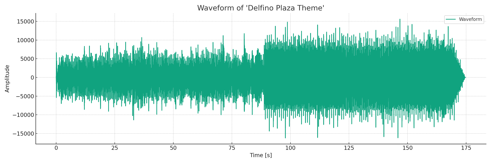

Mario's Hat Analysis
The code snippet provided offers a glimpse into the assembly and data structure of Mario's hat in the game. A "diff" section indicates changes in the data, perhaps showing development progress or updates. Labels such as "lbl_80121718" and markers like "@1763" help navigate the code. Assembly directives organize the code into sections, expose global symbols, and align data. The ASCII strings and "incbin" directives refer to external files, likely assets like textures and 3D models used in the game. For instance, "cDirtyFileName" and "cDirtyTexName" suggest file paths to textures, possibly related to environmental elements within the game. The binary data inclusions point to specific sections of the game's ROM file, indicating where the data for the hat is stored.
Game Logo Color Palette
The colors extracted from the game's logo provide a snapshot of the palette used throughout 'Super Mario Sunshine'. These selected hues capture the essence of the game's visual theme, from the bright tropical blues and greens to the warm accents that evoke the game's sunny and cheerful environment.

Delfino Plaza Theme Analysis
The waveform visualization of an audio track is a graphical representation of the sound wave's amplitude over time. This visualization is a fundamental tool in music production and analysis as it provides insights into the dynamic range, volume peaks, and power of different sections of a track.
In the context of 'Delfino Plaza Theme', the waveform helps us understand the composition's structure, identifying where the music crescendos or decrescendos, and highlighting the rhythm and tempo. By examining the waveform, we can also infer the emotional impact of the piece, as larger waves indicate louder, more energetic sections, while smaller waves suggest quieter, more subdued parts.
Moreover, waveform analysis allows us to pinpoint the exact moments where specific instruments or vocals enter or exit, giving us a clearer picture of the layering and arrangement of the song. As a result, it is an excellent method for visualizing and appreciating the complexities of musical composition in 'Super Mario Sunshine'.
